RegionalRubyKaigi レポート (73) 名古屋Ruby会議04
初稿：2019-08-18
RegionalRubyKaigi レポート 名古屋Ruby会議04
はじめに
2019年6月8日、名古屋Ruby会議04が開催されました。前回と同じく大須演芸場での開催となり、100名超えのご参加をいただきました。本エントリではこのイベントのレポートをさせていただきます。

概要
開催日
2018年6月8日(土) 10:00 ~ 18:00
開催場所
愛知県名古屋市 大須演芸場
主催
後援
参加人数
(概算)107人
公式HP
http://regional.rubykaigi.org/nagoya04/
ハッシュタグ
Twitter #nagoyark04
プログラム
第1部 LT
- Ruby meets password-less world(@corocn)
- 海外Rubyカンファレンスへの踏み出し方(koic)
- 顔文字をX万個集める技術(color_box)
Ruby×AWS Lambdaでサーバレスの導入 ~TUNAG分析基盤の事例をもとに~
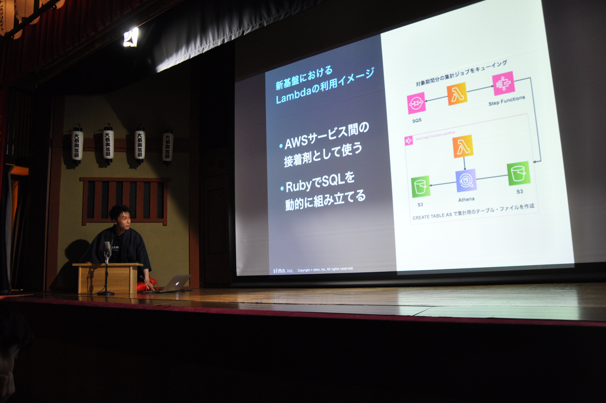
- 発表者
- 松谷勇史朗(@uuushiro)
- 資料
沖縄発Rubyフルリモート会社のリモートワークを支える仕組み

- 発表者
- 安川 要平
- 資料
開発環境の自動化とチューニングについて(仮)
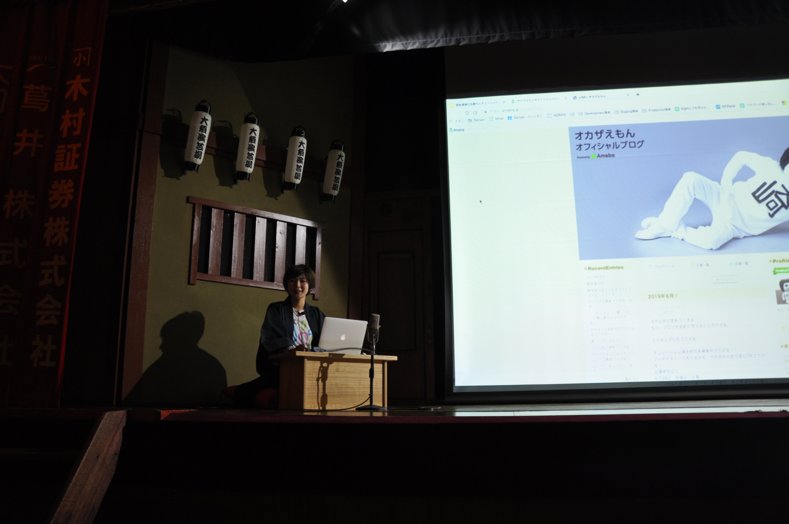
- 発表者
- yn-misaki
- 資料
第2部 LT
スポンサー様のLTの後、第2部です。
- Metrics/LineLength(onk)
- How to quickly read the source code(yhirano55)
- Context threading on the Ruby VM(笹田耕一)
†Ruby黒魔術経典†
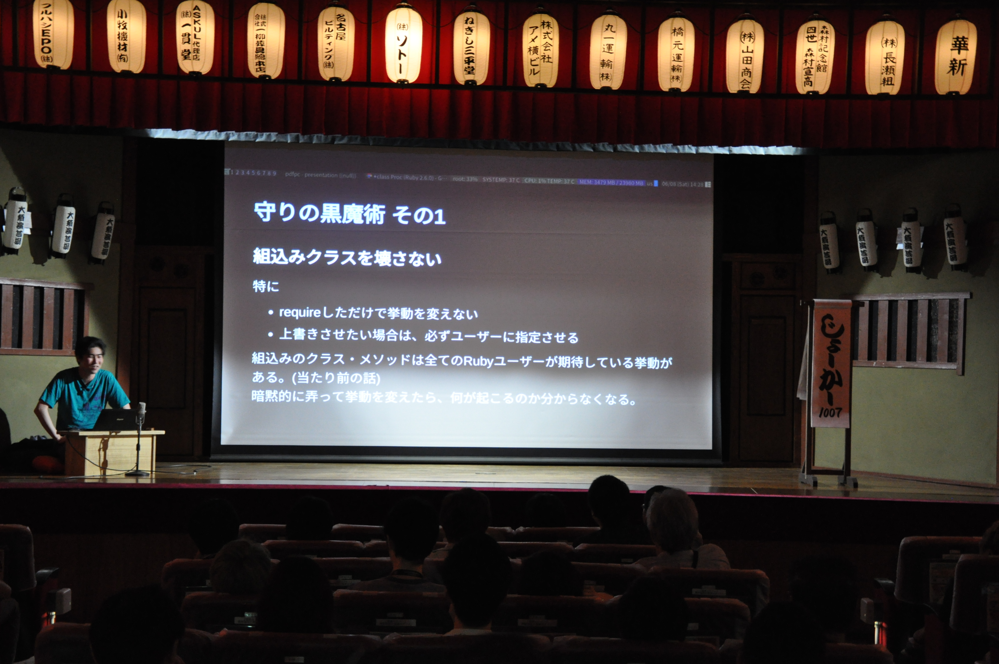
-
発表者
- joker1007
-
資料
Pragmatic Charty
- 発表者
- 秒速@284km (Kazuma Furuhashi)
- 資料
良いインターフェイスの探求：コマンドパターンを例に
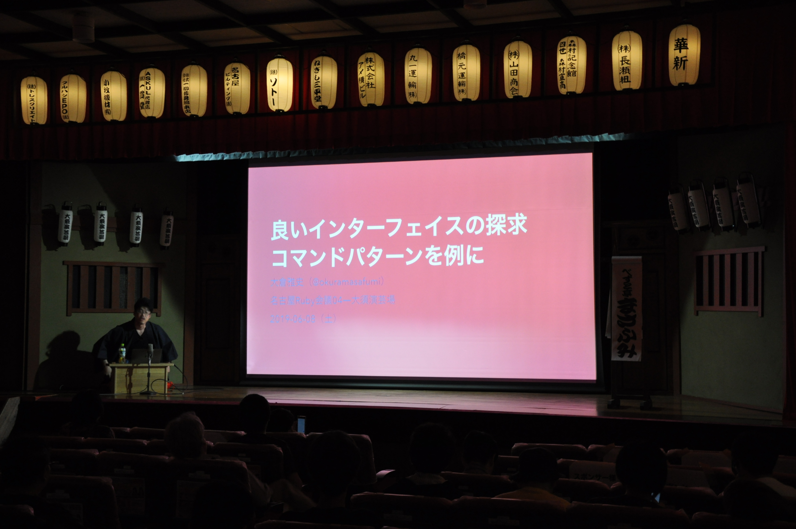
第3部
スポンサー様のLTの後、第3部です。
入門 関数型-ish プログラミング on Ruby

- 発表者
- @kokuyouwind / Shunsuke Mori
- 資料
Ruby 3 の型解析に向けた計画
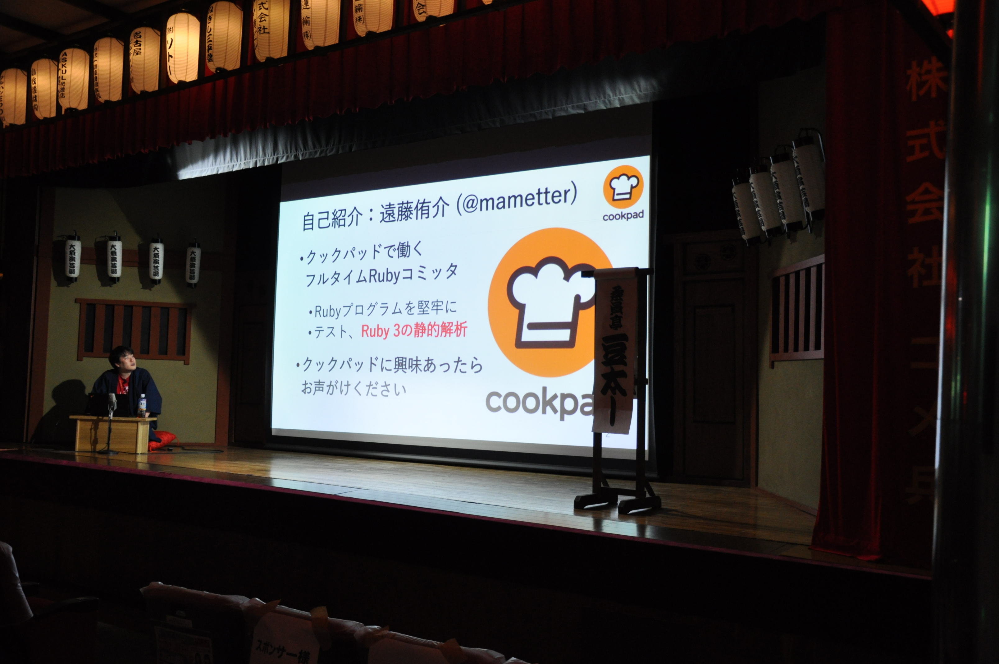
- 発表者
- Yusuke Endoh
- 資料
Rubyが静的型付け言語であることの証拠の発表

会場の様子

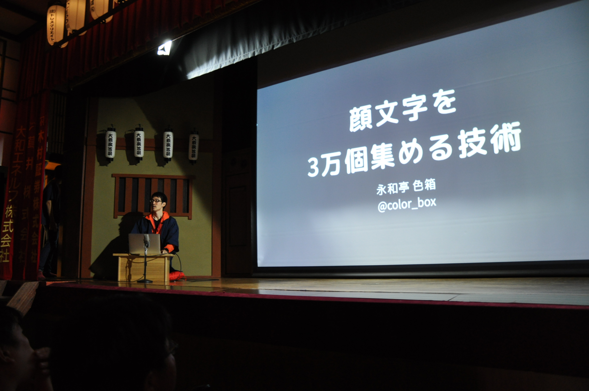


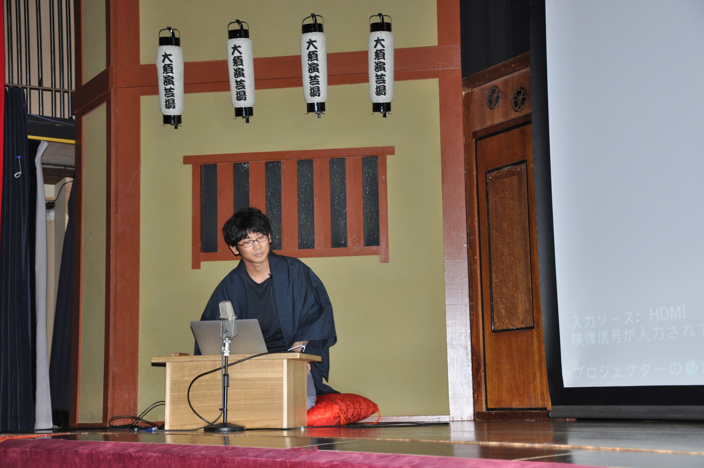
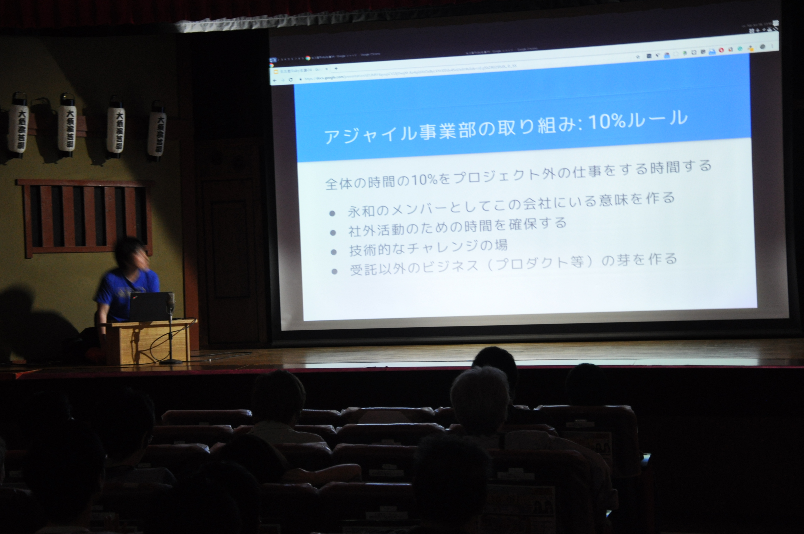
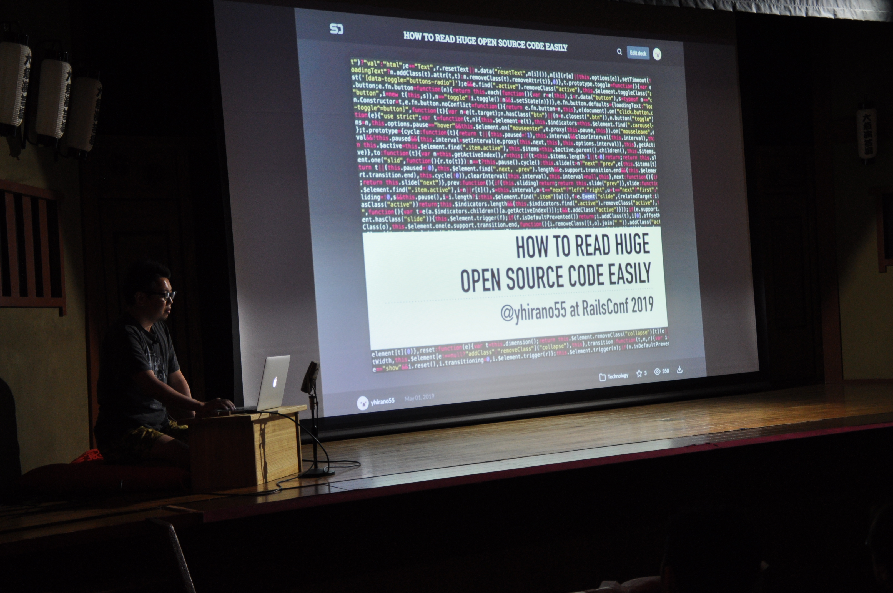


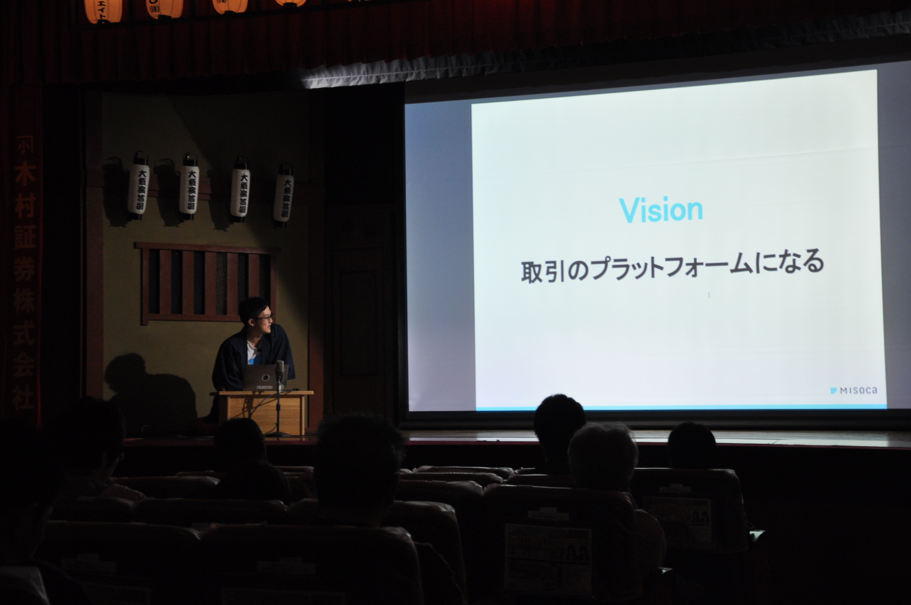
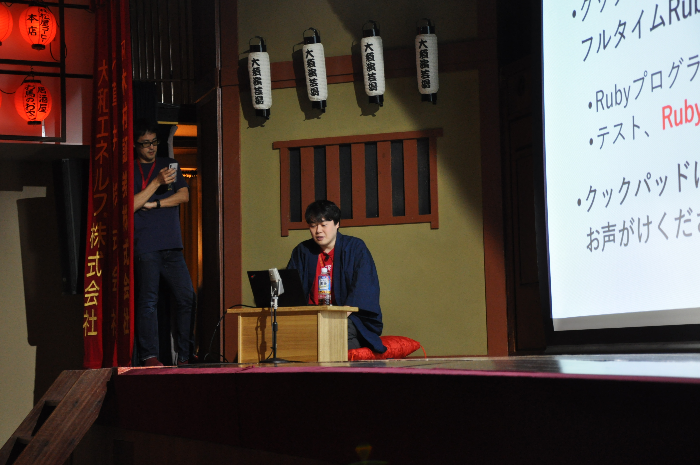
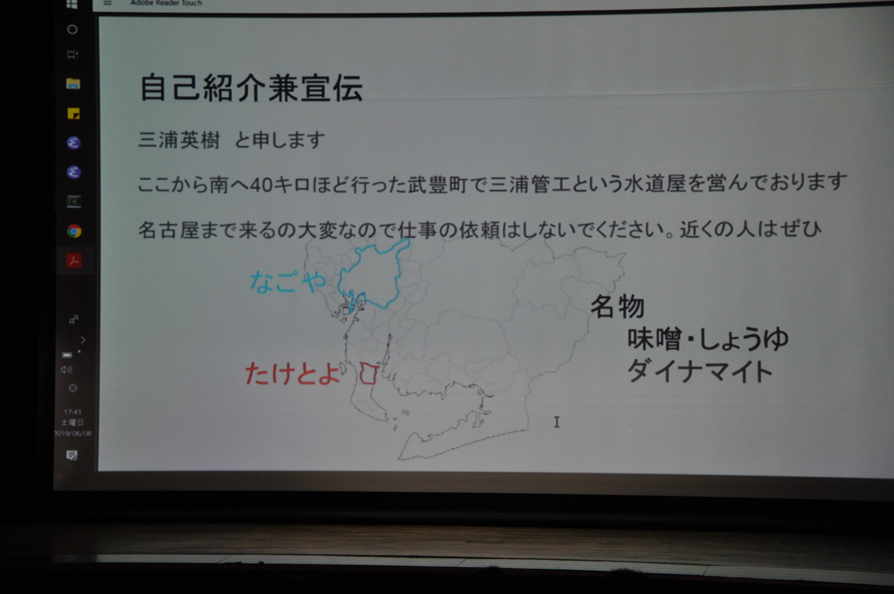

さいごに
今回初めてカンファレンスイベントに参加させていただきましたが、Ruby愛にあふれた方々がとても多くて楽しかったです。 3ヶ月くらいバタバタしていたのですが、スタッフとして頑張ってよかったと思います。 ご協力頂いた皆様、並びにご来場いただいた皆様、本当にありがとうございました。
謝辞
名古屋 Ruby 会議04のスポンサーとして以下の8社様には、多大なご協力を頂きました。実行委員一同、感謝申し上げます。
- 株式会社永和システムマネジメント
- 株式会社Misoca
- GMOペパボ株式会社(Tシャツスポンサー)
- 株式会社エイチーム
- 株式会社スタメン
- 有限会社 来栖川電算
- Sansan株式会社
- 株式会社キャスター
（順不同、敬称略）
書いた人
- 八雲 はる (huequica) Ruby東海所属。2018/06くらいからRubyやりだしたよちよちマン。